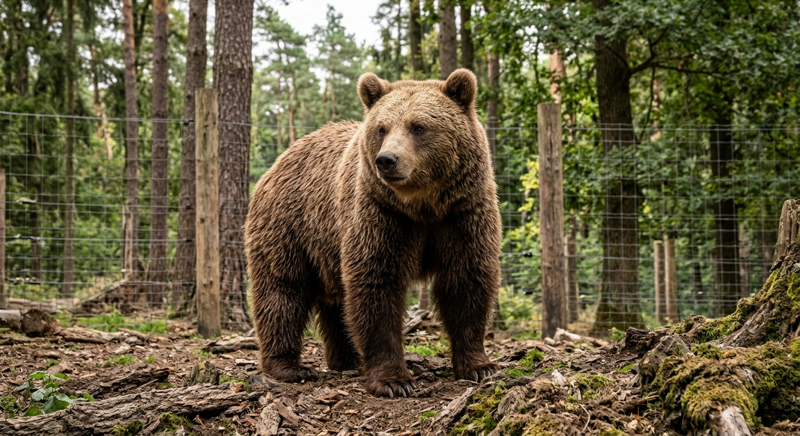
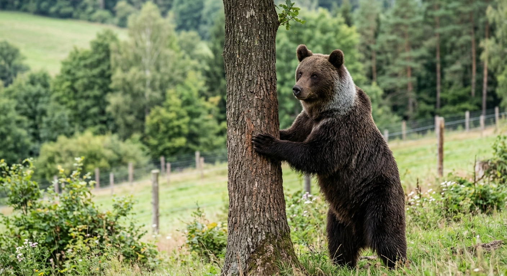
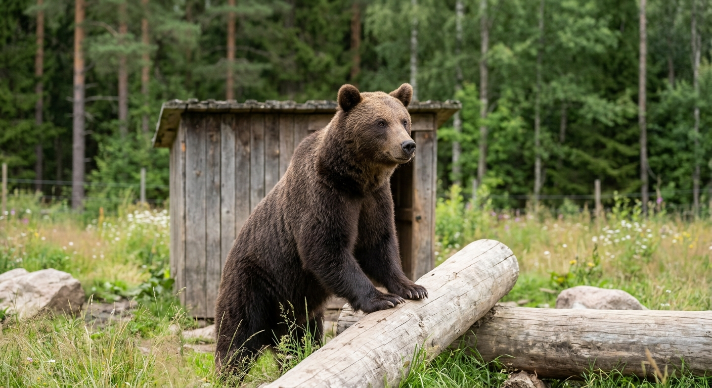

Barnabáš
Datum narození: 12. 04. 2014
Povaha: Klidný, rozvážný a dominantní samec. Vyhledává stinná místa u potoka.
Zdravotní testy: Odběry krve – V pořádku, skvělá kondice (15. 05. 2026)
Úspěchy: Úspěšná adaptace na rozlehlý lesní výběh.
Rodiče: Nerelevantní / neznámé

Černoch
Datum narození: 02. 02. 2026
Povaha: Zvědavý, velmi aktivní a zvídavý medvídek. Rád prozkoumává nové podněty.
Zdravotní testy: Kontrola mláděte + očkování – Zdravý, odpovídající růst (10. 08. 2026)
Úspěchy: Zvládnutí základních dovedností samostatného sběru potravy.
Rodiče: Matka: Mia, Otec: Jindra

Jindra
Datum narození: 20. 01. 2012
Povaha: Majestátní, sebevědomý samec se snášenlivou povahou vůči ošetřovatelům.
Zdravotní testy: RTG kloubů a zuby – Bez patologických nálezů (18. 03. 2026)
Úspěchy: Otec několika úspěšně odchovaných mláďat ve stanici.
Rodiče: Nerelevantní / původní divoká linie

Khalifa
Datum narození: 15. 03. 2017
Povaha: Ostražitá, elegantní a teritoriální medvědice. Ráda šplhá a pozoruje okolí.
Zdravotní testy: Genetický profil + parazitologie – V pořádku / Negativní (02. 06. 2026)
Úspěchy: Skvělá adaptabilita na obohacovací prvky ve výběhu.
Rodiče: Nerelevantní

Mia
Datum narození: 08. 02. 2016
Povaha: Trpělivá, starostlivá a velmi jemná matka s klidným přístupem.
Zdravotní testy: Sonografie a poporodní kontrola – Plně regenerovaná (12. 04. 2026)
Úspěchy: Vzorové odchování mláďat ve výchovném programu stanice.
Rodiče: Nerelevantní

Nosík
Datum narození: 05. 02. 2026
Povaha: Hravé a zvídavé mládě, které si rádo hraje s dřevěnými poleny.
Zdravotní testy: Parazitologické vyšetření – Negativní (20. 09. 2026)
Úspěchy: Úspěšné začlenění do mláďecí skupiny a přechod na pevnou stravu.
Rodiče: Matka: Mia, Otec: Barnabáš

Pinďa
Datum narození: 02. 02. 2026
Povaha: Opatrnější a plaché mládě, které se drží blízko úkrytů, ale je velmi obratné.
Zdravotní testy: Preventivní prohlídka – Zdravý, plně v normě (11. 08. 2026)
Úspěchy: Výborná schopnost orientace a hledání schované potravy.
Rodiče: Matka: Mia, Otec: Jindra

Ruda
Datum narození: 10. 02. 2026
Povaha: Nebojácný, energický a učenlivý mladý medvídek.
Zdravotní testy: Váhový přírůstek a krevní obraz – Výborný (05. 10. 2026)
Úspěchy: Rychlé osvojení přirozených návyků při vyhledávání potravy v terénu.
Rodiče: Matka: Khalifa, Otec: Barnabáš